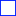

<!doctype html>
<html lang="en">
    <head>
        <meta charset="utf-8">
        <meta http-equiv="X-UA-Compatible" content="IE=edge">
        <meta name="viewport" content="initial-scale=1,user-scalable=no,maximum-scale=1,width=device-width">
        <meta name="mobile-web-app-capable" content="yes">
        <meta name="apple-mobile-web-app-capable" content="yes">
        <link rel="stylesheet" href="css/leaflet.css">
        <link rel="stylesheet" href="css/qgis2web.css"><link rel="stylesheet" href="css/fontawesome-all.min.css">
        <style>
        html, body, #map {
            width: 100%;
            height: 100%;
            padding: 0;
            margin: 0;
        }
        </style>
        <title></title>
    </head>
    <body>
        <div id="map">
        </div>
        <script src="js/qgis2web_expressions.js"></script>
        <script src="js/leaflet.js"></script>
        <script src="js/leaflet.rotatedMarker.js"></script>
        <script src="js/leaflet.pattern.js"></script>
        <script src="js/leaflet-hash.js"></script>
        <script src="js/Autolinker.min.js"></script>
        <script src="js/rbush.min.js"></script>
        <script src="js/labelgun.min.js"></script>
        <script src="js/labels.js"></script>
        <script src="data/Micros2016_1.js"></script>
        <script src="data/Micros2022_2.js"></script>
        <script>
        var map = L.map('map', {
            zoomControl:true, maxZoom:28, minZoom:1
        }).fitBounds([[19.84308638619538,-102.3073018282907],[21.904009091769467,-99.48831869799508]]);
        var hash = new L.Hash(map);
        map.attributionControl.setPrefix('<a href="https://github.com/tomchadwin/qgis2web" target="_blank">qgis2web</a> &middot; <a href="https://leafletjs.com" title="A JS library for interactive maps">Leaflet</a> &middot; <a href="https://qgis.org">QGIS</a>');
        var autolinker = new Autolinker({truncate: {length: 30, location: 'smart'}});
        var bounds_group = new L.featureGroup([]);
        function setBounds() {
        }
        map.createPane('pane_OpenStreetMap_0');
        map.getPane('pane_OpenStreetMap_0').style.zIndex = 400;
        var layer_OpenStreetMap_0 = L.tileLayer('https://tile.openstreetmap.org/{z}/{x}/{y}.png', {
            pane: 'pane_OpenStreetMap_0',
            opacity: 1.0,
            attribution: '',
            minZoom: 1,
            maxZoom: 28,
            minNativeZoom: 0,
            maxNativeZoom: 19
        });
        layer_OpenStreetMap_0;
        map.addLayer(layer_OpenStreetMap_0);
        function pop_Micros2016_1(feature, layer) {
            var popupContent = '<table>\
                    <tr>\
                        <th scope="row">Clv_Mun</th>\
                        <td>' + (feature.properties['Clv_Mun'] !== null ? autolinker.link(feature.properties['Clv_Mun'].toLocaleString()) : '') + '</td>\
                    </tr>\
                    <tr>\
                        <th scope="row">Municipio</th>\
                        <td>' + (feature.properties['Municipio'] !== null ? autolinker.link(feature.properties['Municipio'].toLocaleString()) : '') + '</td>\
                    </tr>\
                    <tr>\
                        <th scope="row">Nom_Micro</th>\
                        <td>' + (feature.properties['Nom_Micro'] !== null ? autolinker.link(feature.properties['Nom_Micro'].toLocaleString()) : '') + '</td>\
                    </tr>\
                    <tr>\
                        <th scope="row">CZ</th>\
                        <td>' + (feature.properties['CZ'] !== null ? autolinker.link(feature.properties['CZ'].toLocaleString()) : '') + '</td>\
                    </tr>\
                    <tr>\
                        <th scope="row">Región</th>\
                        <td>' + (feature.properties['Región'] !== null ? autolinker.link(feature.properties['Región'].toLocaleString()) : '') + '</td>\
                    </tr>\
                    <tr>\
                        <th scope="row">AnalfTot</th>\
                        <td>' + (feature.properties['AnalfTot'] !== null ? autolinker.link(feature.properties['AnalfTot'].toLocaleString()) : '') + '</td>\
                    </tr>\
                    <tr>\
                        <th scope="row">SinPriTot</th>\
                        <td>' + (feature.properties['SinPriTot'] !== null ? autolinker.link(feature.properties['SinPriTot'].toLocaleString()) : '') + '</td>\
                    </tr>\
                    <tr>\
                        <th scope="row">SinSecTot</th>\
                        <td>' + (feature.properties['SinSecTot'] !== null ? autolinker.link(feature.properties['SinSecTot'].toLocaleString()) : '') + '</td>\
                    </tr>\
                    <tr>\
                        <th scope="row">RezagoTot</th>\
                        <td>' + (feature.properties['RezagoTot'] !== null ? autolinker.link(feature.properties['RezagoTot'].toLocaleString()) : '') + '</td>\
                    </tr>\
                    <tr>\
                        <th scope="row">AreaKm2</th>\
                        <td>' + (feature.properties['AreaKm2'] !== null ? autolinker.link(feature.properties['AreaKm2'].toLocaleString()) : '') + '</td>\
                    </tr>\
                </table>';
            layer.bindPopup(popupContent, {maxHeight: 400});
        }

        function style_Micros2016_1_0() {
            return {
                pane: 'pane_Micros2016_1',
                opacity: 1,
                color: 'rgba(255,1,1,1.0)',
                dashArray: '',
                lineCap: 'butt',
                lineJoin: 'miter',
                weight: 2.0, 
                fillOpacity: 0,
                interactive: true,
            }
        }
        map.createPane('pane_Micros2016_1');
        map.getPane('pane_Micros2016_1').style.zIndex = 401;
        map.getPane('pane_Micros2016_1').style['mix-blend-mode'] = 'normal';
        var layer_Micros2016_1 = new L.geoJson(json_Micros2016_1, {
            attribution: '',
            interactive: true,
            dataVar: 'json_Micros2016_1',
            layerName: 'layer_Micros2016_1',
            pane: 'pane_Micros2016_1',
            onEachFeature: pop_Micros2016_1,
            style: style_Micros2016_1_0,
        });
        bounds_group.addLayer(layer_Micros2016_1);
        function pop_Micros2022_2(feature, layer) {
            var popupContent = '<table>\
                    <tr>\
                        <th scope="row">CoordZn</th>\
                        <td>' + (feature.properties['CoordZn'] !== null ? autolinker.link(feature.properties['CoordZn'].toLocaleString()) : '') + '</td>\
                    </tr>\
                    <tr>\
                        <th scope="row">Micro</th>\
                        <td>' + (feature.properties['Micro'] !== null ? autolinker.link(feature.properties['Micro'].toLocaleString()) : '') + '</td>\
                    </tr>\
                    <tr>\
                        <th scope="row">Anaf</th>\
                        <td>' + (feature.properties['Anaf'] !== null ? autolinker.link(feature.properties['Anaf'].toLocaleString()) : '') + '</td>\
                    </tr>\
                    <tr>\
                        <th scope="row">SinPri</th>\
                        <td>' + (feature.properties['SinPri'] !== null ? autolinker.link(feature.properties['SinPri'].toLocaleString()) : '') + '</td>\
                    </tr>\
                    <tr>\
                        <th scope="row">SinSec</th>\
                        <td>' + (feature.properties['SinSec'] !== null ? autolinker.link(feature.properties['SinSec'].toLocaleString()) : '') + '</td>\
                    </tr>\
                    <tr>\
                        <th scope="row">RezagoTot</th>\
                        <td>' + (feature.properties['RezagoTot'] !== null ? autolinker.link(feature.properties['RezagoTot'].toLocaleString()) : '') + '</td>\
                    </tr>\
                    <tr>\
                        <th scope="row">CoordReg</th>\
                        <td>' + (feature.properties['CoordReg'] !== null ? autolinker.link(feature.properties['CoordReg'].toLocaleString()) : '') + '</td>\
                    </tr>\
                </table>';
            layer.bindPopup(popupContent, {maxHeight: 400});
        }

        function style_Micros2022_2_0() {
            return {
                pane: 'pane_Micros2022_2',
                opacity: 1,
                color: 'rgba(1,30,255,1.0)',
                dashArray: '',
                lineCap: 'butt',
                lineJoin: 'miter',
                weight: 2.0, 
                fillOpacity: 0,
                interactive: true,
            }
        }
        map.createPane('pane_Micros2022_2');
        map.getPane('pane_Micros2022_2').style.zIndex = 402;
        map.getPane('pane_Micros2022_2').style['mix-blend-mode'] = 'normal';
        var layer_Micros2022_2 = new L.geoJson(json_Micros2022_2, {
            attribution: '',
            interactive: true,
            dataVar: 'json_Micros2022_2',
            layerName: 'layer_Micros2022_2',
            pane: 'pane_Micros2022_2',
            onEachFeature: pop_Micros2022_2,
            style: style_Micros2022_2_0,
        });
        bounds_group.addLayer(layer_Micros2022_2);
        map.addLayer(layer_Micros2022_2);
        var baseMaps = {};
        L.control.layers(baseMaps,{' Micros 2022': layer_Micros2022_2,' Micros 2016': layer_Micros2016_1,"OpenStreetMap": layer_OpenStreetMap_0,},{collapsed:false}).addTo(map);
        setBounds();
        var i = 0;
        layer_Micros2016_1.eachLayer(function(layer) {
            var context = {
                feature: layer.feature,
                variables: {}
            };
            layer.bindTooltip((layer.feature.properties['Nom_Micro'] !== null?String('<div style="color: #ff0101; font-size: 6pt; font-weight: bold; font-family: \'MS Shell Dlg 2\', sans-serif;">' + layer.feature.properties['Nom_Micro']) + '</div>':''), {permanent: true, offset: [-0, -16], className: 'css_Micros2016_1'});
            labels.push(layer);
            totalMarkers += 1;
              layer.added = true;
              addLabel(layer, i);
              i++;
        });
        var i = 0;
        layer_Micros2022_2.eachLayer(function(layer) {
            var context = {
                feature: layer.feature,
                variables: {}
            };
            layer.bindTooltip((layer.feature.properties['Micro'] !== null?String('<div style="color: #0008fe; font-size: 6pt; font-weight: bold; font-family: \'MS Shell Dlg 2\', sans-serif;">' + layer.feature.properties['Micro']) + '</div>':''), {permanent: true, offset: [-0, -16], className: 'css_Micros2022_2'});
            labels.push(layer);
            totalMarkers += 1;
              layer.added = true;
              addLabel(layer, i);
              i++;
        });
        resetLabels([layer_Micros2016_1,layer_Micros2022_2]);
        map.on("zoomend", function(){
            resetLabels([layer_Micros2016_1,layer_Micros2022_2]);
        });
        map.on("layeradd", function(){
            resetLabels([layer_Micros2016_1,layer_Micros2022_2]);
        });
        map.on("layerremove", function(){
            resetLabels([layer_Micros2016_1,layer_Micros2022_2]);
        });
        </script>
    </body>
</html>
